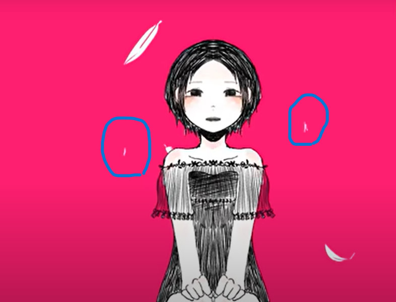

vocaloid

IMAWANOKIWA
「IMAWANOKIWA」は2019年、11月10日にボカロpの「いよわ」さんによってニコニコ動画に投稿された。
ちなみに、いよわさん自身の初ヒット曲でもあり、VOCALOIDの伝説入りを達成した曲でもある。
それ以外にも多くの曲をヒットさせているが、その曲はまた後に説明しよう。

↑まずは聴いてみよう（クリック）
それでは考察だ。
まず、私はこの曲を「実の娘を失ってしまった主人公の末路」だと解釈している。
IMAWANOKIWAは、死を連想させる切ない、かつ残酷な曲だ。
まずは「IMAWANOKIWA」を日本語に変えてみよう。
「今際の際」
となる。
これは、死ぬ間際を意味する。
なぜ死ぬ間際なのかは、これから分かっていくだろう。
ここからはメインとなる歌詞の考察だ。
夢を見る明るい日々
ドラマを見るのが好きだった
甘いハッピーエンドに浸っては眠るのが好きだった
窓から差し込む光とそよ風が朝を教えた
冒頭は、主人公自身の願望が描かれている。
「いつか、私もあのドラマのように」と、幸せなストーリーの余韻に浸って眠りにつき、
いつも通りの朝を迎える。
主人公はそんな毎日を迎えるのが好きだったのだろう。

顔はとても穏やかな雰囲気を感じる。
しかし、これから事態は一変する。
悲劇
布団の中さえ冷えていた朝に
誰にも会いたくなくなって太陽を睨んでいた
結露越しの街に 白い翼を見た その四肢を見た
間違いなくあなたは私の天使だ
冒頭までは幸せな気持ちで眠りにつき、明るい朝を迎えていただろう。
しかし、いつなにが起こるかわからない。|
|
夜、眠ることさえできず朝は憂鬱で、太陽は、主人公の気持ちとは裏腹に輝いている。そんな太陽を睨んでいた。
ふと、窓際を眺めてみると、白い翼をした天使が見えた。
それを見て主人公は「間違いなくあなたは私の天使だ。」と確信する。
天使とは、失った娘の事を指す。

窓際をみると、外になにかいることに気がつく主人公。
背景には左から「ｌ.h」と書いてある。
LHとは、、Luteinizing Hormoneの略で黄体形成ホルモン（おうたいけいせいほるもん）のことを言います。 脳の下垂体から分泌され、排卵や生殖機能に関係の深いホルモンです。
天使は、亡くなった大切な人が悲しみに暮れている主人公を見て天国へ行けず、心配になって見に来てくれたのか、それとも幻覚なのかは分からない。
ただ、背景がピンク色であることから、幻覚である可能性が非常に高いだろう。
幻覚を見ているとなれば、主人公の精神状態はかなり不安定だ。
どうして
甘いエンジェルヘイロー
仰いだ哀れなサクリファイス
幸福の定義さえ覆るほどに綺麗なその瞳に
全てを奪われた
※エンジェルヘイロー = 天使の輪
※サクリファイス = 犠牲にする，いけにえにする，殺す,犠牲になる，身を捧げる
神様がが主人公の娘を連れて行ってしまったのだろう。
「なんで私の娘なの」「なんで連れて行くの」と、怒り、悲しみなどの感情が渦巻いている。